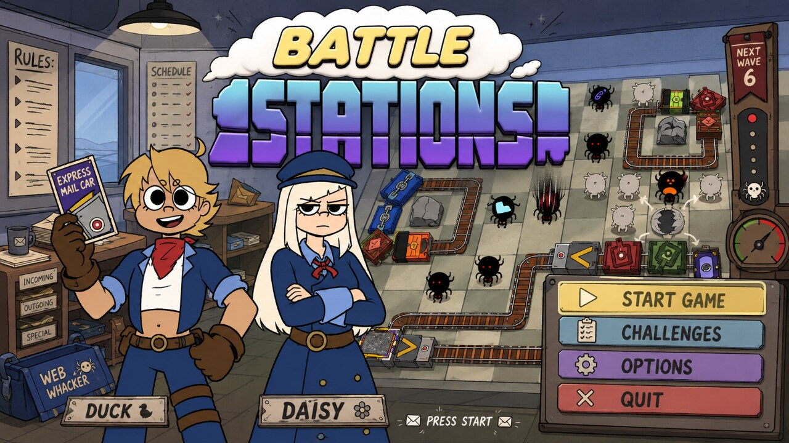
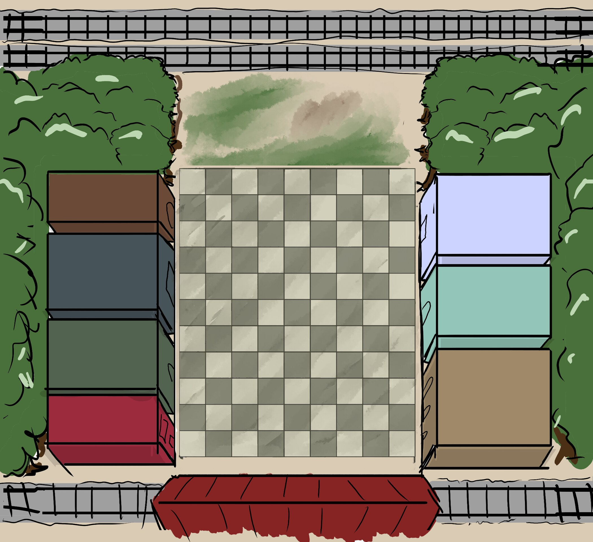
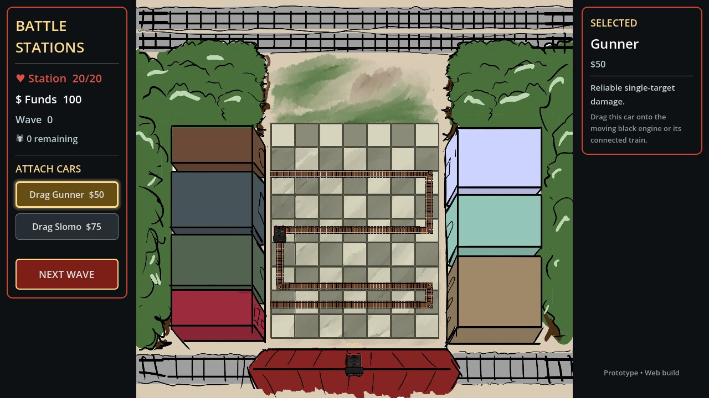
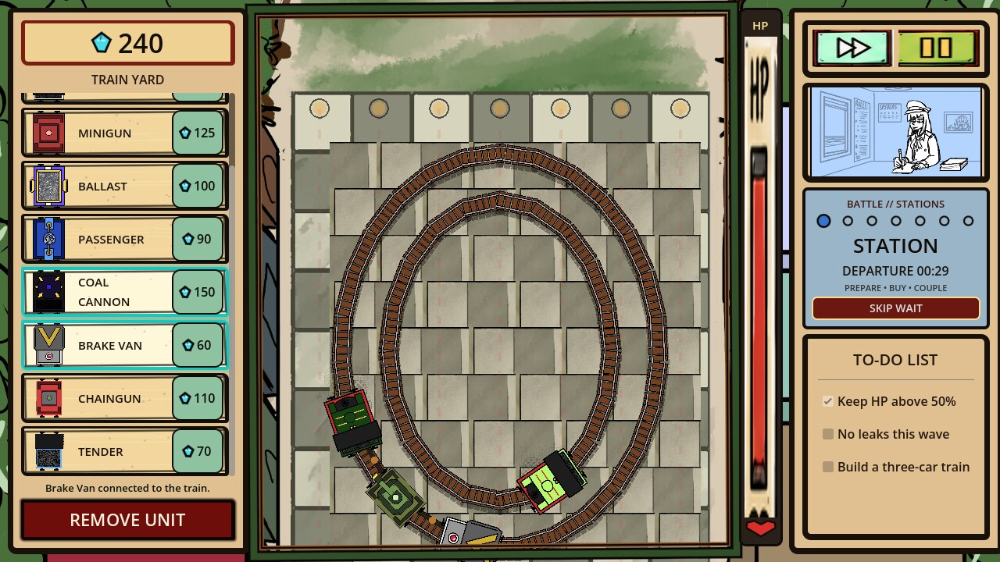
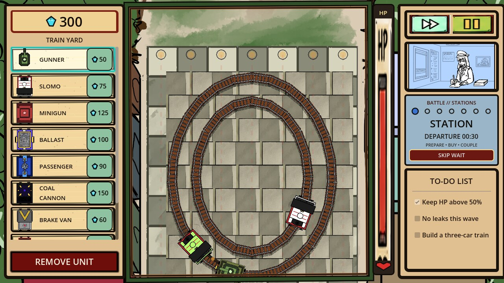
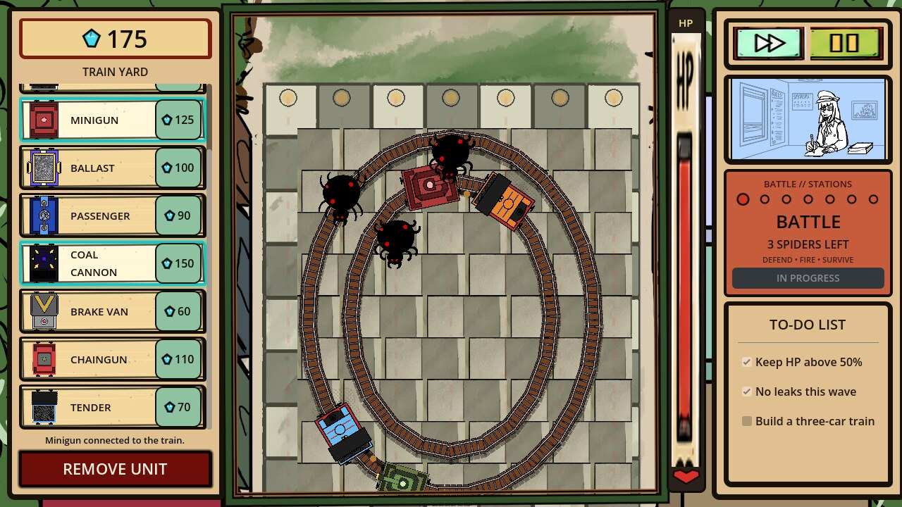
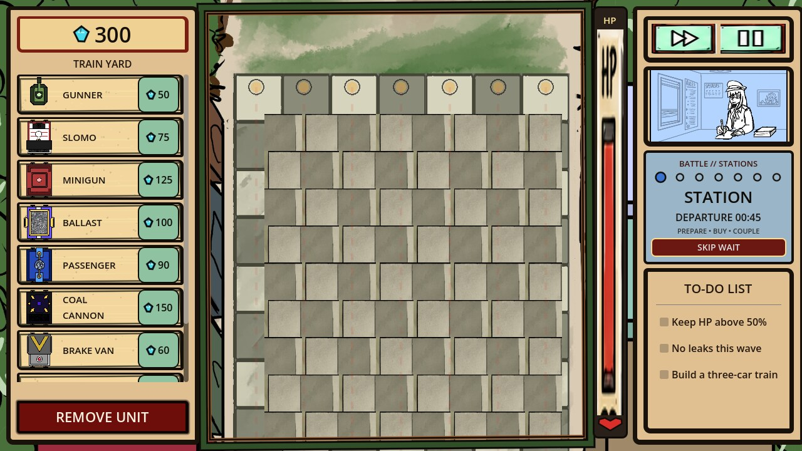
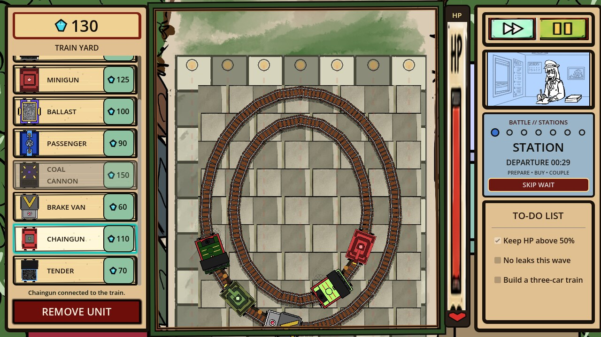
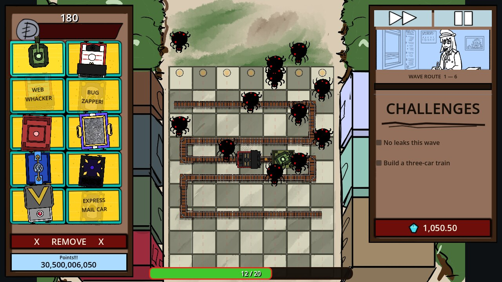

Battle Stations
A tower-defense game where the turrets are train cars, not towers — and, more than that, a record of how I actually build with an AI coding assistant: recover what exists, define one small goal, implement it, launch the real build, screenshot it, compare it against the target, and feed the gap into the next iteration.
Play it in your browserThe Idea
Battle Stations is a browser tower-defense game with one twist: there are no towers. Every defense — a machine-gun car, a slowing car, a splash-damage cannon car — is a piece of rolling stock you drag onto a moving train, and the train itself is the thing patrolling the board and fighting for you. Spiders spawn around the edges of a tabletop-sized courtyard and walk toward a station at the bottom; your trains have to intercept them along the way.

The Starting Point

Battle Stations didn't start as a Godot project, or even as a clear design document. It started as an incomplete Unity prototype from late 2023 — recovered scenes named Battlestations2.0.unity through 4.0, a folder of illustrated UI art, and a trail of old Discord messages describing a train-and-engine concept that never got fully built. Rather than reverse-engineer intent from filenames, the first real decision was to snapshot that project untouched into legacy_unity/ and treat it as evidence, not as a spec.
That evidence turned out to matter. A deleted Google Sheet titled "battle stations unit concepts," preserved only in a Discord link preview, listed four engines — Steam ($300, carries up to 5 cars), Diesel ($375, slower, up to 7 cars), Electric ($250, faster, up to 3 cars), and Oil ($350, description cut off). None of that survived into the recovered gameplay scripts. The project wiki keeps an explicit evidence hierarchy for exactly this reason: active code beats archived code beats old chat logs beats "the filename implies this." A roadmap line makes the same rule operational: separate recovered facts from new design decisions.
My Development Methodology
The project's own roadmap states the working rules directly, and I've stuck to them closely enough that I can just quote them:
- Keep every phase playable before advancing to the next
- Separate recovered facts from new design decisions
- Test in the browser once a Web export exists, not only in the editor
- Record playtest observations before changing balance formulas
In practice that turns into a loop, repeated for every mechanic, every UI change, and every bug fix:
- Define one specific goal
- Implement it with an AI coding assistant
- Launch the real build
- Interact with it and capture a screenshot
- Compare the result against the target
- Identify the specific mismatch
- Fix it, verify again, commit, deploy
The screenshots aren't presentation material tacked on afterward — they're the mechanism that tells the next iteration what to do. A few of those iterations below.
Building the First Playable Version

The first objective wasn't visual quality — it was the minimum combat loop: spawn spiders, move them down the board, let a turret acquire a target and fire, register a kill, pay out currency. Ugly, but real, and playable end to end before anything else was allowed to change.
Porting eleven gameplay scripts across two engines surfaced exactly the kind of problem that only shows up when you actually run the thing: inherited Unity range and speed values didn't translate directly into Godot's world scale, so a turret with a "correct" number on paper couldn't actually reach a spider on screen. One commit from this stretch, 98c0890, exists specifically to fix the engine driving backward — the locomotive sprite's forward direction in the source art didn't match the direction the movement code assumed, so the whole train patrolled its route in reverse until someone actually watched it move.
Finding the Visual Direction
Once the loop worked, the interface still looked like a generic web dashboard sitting on top of it. The recovered reference art — full-height illustrated cabinets, a turquoise-and-yellow card tray, hand-inked rails — became the actual target to converge on, not a mood board to describe in prose. A sequence of real commits tracks the convergence: redesign the gameplay screen as an illustrated tabletop, turn the shop sidebar into a comic card tray, align the interface and rails with the illustrated reference.
Handing an AI coding assistant the reference image directly, and asking it to match proportions, panel treatment, and line weight against that image, produced a closer result than describing the target in words ever did. "More hand-drawn" is subjective; "this panel's corner radius and border weight should match that panel's" is a concrete, checkable difference.
Designing the Railway
The procedural track generator went through real, documented failures of its own. The original approach swept a path back and forth across the board and simply reversed direction at each end — technically a route, but not a railway. It worked, but it read as a train running out of track and backing up, over and over, rather than a circuit. A later pass replaced it with closed concentric loops so a train patrols continuously instead, and the generator has kept evolving since — modular grid-aligned circuits are the current approach — while staying under the same constraint the whole time: every generated layout has to remain fully drivable and cover every enemy lane before it's accepted.

Battle and Station Modes
The run alternates between two explicit states rather than combat happening continuously in the background. STATION mode pauses spawning so a player can look at the board, pick a train, and buy or attach cars with no time pressure; BATTLE mode runs the wave. That split exists directly because of the roadmap's "keep every phase playable" rule extended into runtime: a build phase with no clock isn't a nice-to-have, it's what stops a first-time player from being punished for pausing to think.


AI-Assisted Development Methodology
Saying "I built this with an AI pair programmer" undersells what the loop actually looks like, and flattens the working relationship into something it isn't. It was never prompt-in, finished-game-out. Each iteration ran through the same explicit chain:
- Design intent
- Break it into one small requirement
- Hand over the relevant code, assets, or reference image
- AI implements the change
- Launch the actual build
- Interact with it, capture the result
- Compare against the requirement
- Identify the specific mismatch
- Feed that finding into the next iteration
In that loop I was the designer, the requirements engineer, the tester, and the integrator; the AI was an implementation accelerator, not a replacement for any of those roles. The distinction matters because the failures below — an engine driving backward, a railway that reversed instead of circulating, art assets that rendered locally but not in the deployed build — were caught by someone actually running the game and noticing the gap, not by trusting that a generated diff matched the intent.
Testing the Real Build
Godot scene files are plain text, which makes it tempting to trust that a diff "looks right" and move on. In practice, actually running the game — headless in CI, and in an isolated virtual display with real synthetic mouse events for anything interactive — caught things a code review never would.
- Headless Godot (
--headless --quit-after N) to catch script and scene parse errors on every meaningful change - A throwaway virtual display plus real mouse events for anything that needs actual interaction — dragging a card onto a train, pausing, clicking a button — because a screenshot of a static scene doesn't prove the input handling underneath it works
- A
git worktreechecked out at the exact commit being tested, rather than the working directory, whenever a claim needs to match what a clean checkout — a fresh clone, or CI — actually sees
Bug Case Study: The Turret That Existed Everywhere Except in Git
A player reported that newly added turret cars were invisible once placed on the board. Locally, that report didn't reproduce at all — the Chaingun, the Tender, the reskinned Gunner and Ballast all rendered correctly, over a dozen fresh launches. The scene files were right. The art was right, sitting exactly where the scenes expected it. The bug wasn't in the code — it was in git. The new .tscn files referencing that artwork had been committed, but the PNGs they pointed at had never actually been git added, so they only ever existed on the machine that made them.
Reproducing it properly meant checking out the exact pre-fix commit into a clean git worktree — the same isolation a CI runner or a fresh clone gets, with none of the untracked files quietly sitting in the working directory to mask the problem. That's what a real clean checkout actually did:


The actual failure was worse than "invisible turrets" — in a genuinely clean checkout, the missing textures cascaded into parse errors on the resources that referenced them, which broke the BuildManager autoload, which broke every script that depended on it. The console made the whole chain legible:
ERROR: Resource file not found: res://assets/sprites/units/Gunner Car Base.png
ERROR: res://scenes/Turret.tscn:19 - Parse Error: [ext_resource] referenced non-existent resource
ERROR: Failed loading resource: res://resources/basic_turret.tres.
SCRIPT ERROR: Parse Error: Could not preload resource file "res://resources/basic_turret.tres".
ERROR: Failed to instantiate an autoload, script 'res://scripts/build_manager.gd' does not inherit from 'Node'.The fix was mechanical once the actual cause was clear: cross-reference every asset path inside every committed scene, script, and resource against git ls-files, rather than trusting that "it's in the folder" meant "it's in the repo." Seven texture files were missing that way. Committing them, re-verifying in a fresh worktree, and only then pushing closed the loop the same day it was reported.
Where It Is Now

The core loop is live and playable: pick a train in STATION mode, attach a car, survive a BATTLE wave, spend the payout on the next one. The roster now includes rapid-fire and splash-damage cars alongside the original Gunner and Slomo, non-combat utility cars that trade weapon slots for economy or hauling capacity, and a railway that circulates continuously instead of reversing at a dead end. The whole thing still ships to a public URL automatically on every push — no manual export step, no "works in the editor" asterisk.
It's still explicitly a scaffold rather than a finished game: there's no win/loss condition yet, no restart flow, and the roadmap tracks the gap between what the recovered reference implies and what's actually implemented rather than letting the interface silently promise features that don't exist.
What I Learned
- A scene file — or a generated diff — that "looks correct" can still be dead on arrival. The only real proof is launching the thing and looking at the screen, in an environment that matches what will actually ship
- Handing an AI pair programmer a reference image and asking it to match specific, checkable differences produced far better visual results than describing the target style in words
- "It works on my machine" is a literal, specific hazard the moment new assets and the scene files referencing them can land in separate, unsynchronized commits — the fix is checking every referenced path against what's actually tracked, not re-running the game locally one more time
- Recovering an old prototype works best as an evidence-gathering exercise, not a spec-reading one — keep what's confirmed, mark what's inferred, and don't let a filename quietly become a design decision
- Deploy automation pays for itself almost immediately on a solo project — not having to remember an export step means every change gets tested in the real target environment instead of "probably works in the editor"